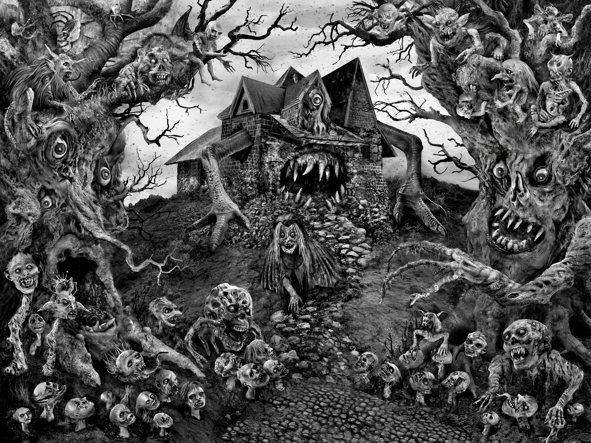

Джейсон Вурхиз
Джейсон Вурхиз (англ. Jason Voorhees) — вымышленный персонаж, главный злодей серии фильмов «Пятница, 13-е», маньяк-убийца, известный своими кровавыми способами расправ над жертвами. «Фирменное» орудие убийства — мачете. Впервые проявляется в фильме «Пятница, 13-е» (1980 года) в качестве сына Памелы Вурхиз — повара в лагере на «Хрустальном озере» — роль сыграл Ари Леман. Создатель персонажа — сценарист Виктор Миллер, также в работе над образом принимали участие Рон Куртц, Шон Каннингем и Том Савини. По первоначальной задумке, Джейсон должен был появиться лишь в эпизоде, а не стать главным героем. Впоследствии персонаж появился во многих книгах, комиксах, а также был издан в виде игрушек и другой продукции наравне с Фредди Крюгером, встреча с которым произошла у Джейсона в фильме «Фредди против Джейсона».
Герой представлен антагонистом серии, который преследует и убивает других персонажей, а также представляет психологические угрозы для отдельных персонажей, как это было в фильме «Пятница, 13-е: Новое начало». После исполнения роли Леманом роль сыграло множество актёров. В результате это повлияло на отзывы критиков и зрителей относительно образа персонажа. Каскадёр Кейн Ходдер сыграл роль чаще остальных — в четырёх фильмах серии.
На протяжении всей серии внешний вид Вурхиза менялся несколько раз из-за того, что над серией работали различные специалисты по гриму и визуальным эффектам, включая Стена Винстона. Дизайн Тома Савини был основой для более поздних вариаций. Знаменитая хоккейная маска появилась лишь в третьем фильме. Начиная с «Пятница, 13-е: Джейсон жив» авторы наделили маньяка сверхъестественными силами, возможностью регенерации и практически полной неуязвимостью. Его жажда убийства объяснялась тем фактом, что маньяк наказывал героев за аморальное поведение, включавшее занятие внебрачным сексом, использование психотропных препаратов и прочее, а также мстил за свою трагическую гибель ещё ребёнком. Имя маньяка было упомянуто во многих фильмах и телесериалах, персонаж появился на страницах юмористических журналов, а также пародийных тв-шоу, а также стал вдохновением для создания хоррор-панк группы. Несколько версий персонажа были выпущены в виде игрушек, а хоккейная маска является одним из самых узнаваемых атрибутов в массовой культуре